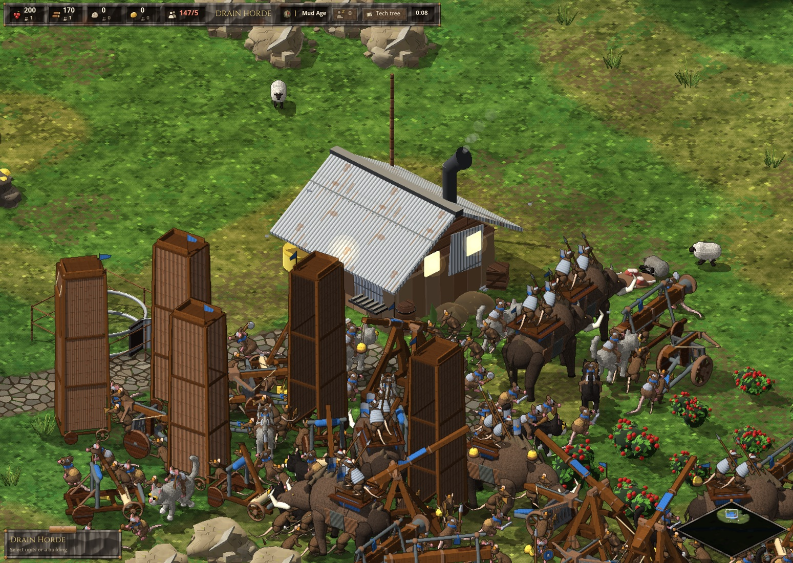
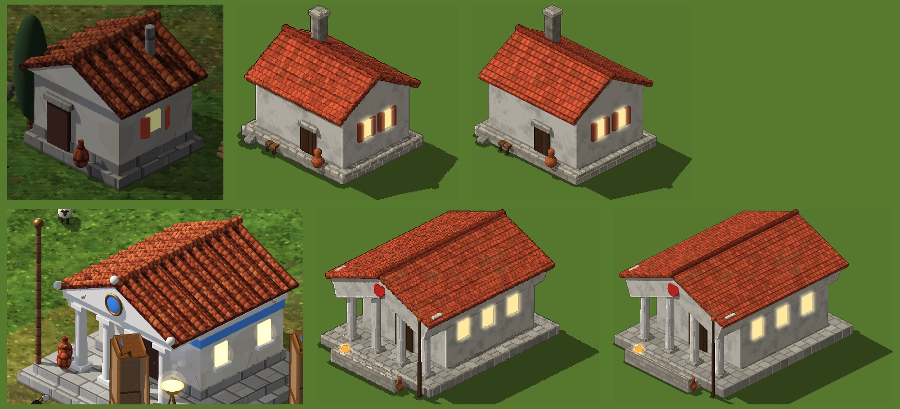

A deterministic RTS engine, written in Lobster.
Creel runs a real-time strategy game as an integer simulation at a fixed 20 ticks a second, the same on every machine. Units, buildings, maps, rules and looks are data in packs. Mods add more data, and small hooks where data isn't enough.
- integers only
- 20 Hz fixed tick
- lockstep multiplayer
- packs signed by sha256
- Apache 2.0
What it is
The parts of an RTS that have to be exact
Creel is the engine underneath Age of Anything, being split out so other games and mods can stand on it. It owns the simulation, pathing, fog, combat and economy systems, rendering, sound, networking and saves. A game is content on top; the game's own content loads as a pack like any mod.
A fixed tick
The sim is integer maths at 20 Hz, driven only by the command stream. No floats, no clocks, no randomness but its own seeded generator. A lint in the test suite holds it to that.
Lockstep
Players send commands, not state. Every machine runs the same ticks and compares a state hash every 30. Today it plays over TCP on a home network, found by a LAN beacon.
Saves that outlive builds
A save written by an older build still loads: a field it lacks loads empty, per-unit columns are padded, and the save code is generated from the sim's own globals.
Everything is data
Buildings, tech, terrain, resources, bots, sound and the UI's look are JSON. Maps are an ASCII drawing with a legend. Units can be procedural voxel bodies described in JSON.
Packs carry their hash
A pack's signature is id@version#sha256 over its files. Race keys carry it today; lobbies and saves will compare the
list, so two players never fight with different rules by accident.
Rule and UI hooks
Where data isn't enough, a pack brings Lobster functions. Rule hooks run in lockstep and are checked for determinism; UI hooks run on one machine and may draw what they like.
Packs and data
Small files you can read
These are real files from Age of Anything, unedited apart from being cut short. A map is a drawing you can change in a text editor. A creature is a few capsules and balls on named points, with legs that walk on their own.
A map is an ASCII drawing
data/maps/reed_meadow.json · "rows", the first 12 of 64
#############################################################DDD
#TTTTTTTTTTTTTTTTTTTTTT....................................,RDDD
#TTTTTTTTTTTTTTTTTTTTTT..................................,,RRDDD
#TTTTTTTTTTTTTTTTTTTTTT......T......TTTTTT..............,,RRDDRD
#.TT..TT.TT..TT.TT..TT.....TTTTT....TTTTTT............,,,,RDDRR#
#"""...T......T..TTTTT.....TTTTT.....................,,,,RDDDR,#
#""""............TTTTT.......T.................."""""",,RDDDR,.#
#"""""...........TTTTT.........................."""""",RDDDR,,.#
#"""..sss..........gg.......###...................,,,,RDDDR,,..#
#"""".ss...........gg.......###..................,,,,RDDDR,,...#
#""""...........................................,,,,RRDDRR,....#
#""".............bb....."""....................,,,,RRDDRR,.....#and a legend into the terrain
Each character names a terrain type in terrain.json: whether it can be walked, its colours,
the resource it holds and what it turns into when that runs out. Next to the rows sit the heights, the
start tiles, the animals, the bridges and a symmetry, so a two-player map is fair by construction.
"schema": "aow.map/2",
"width": 64, "height": 64,
"symmetry": "rotate",
"starts": [[12, 12], [51, 51]],
"legend": {
".": "grass", ",": "swamp", "\"": "reeds",
"#": "rock", "T": "tree", "s": "stone",
"g": "gold", "b": "bugbush",
"R": "river", "D": "deep_river", "f": "ford"
}A body in JSON
data/voxel/bodies/sheep.json · trimmed
{
"skin": "#e4dccb", "pale": "#2e2622",
"size": 1.0, "fur": 0.12,
"points": {
"front": { "at": [0, 4.5, 11.5] },
"back": { "at": [0, -4.5, 11.5] },
"head": { "at": [0, 9.0, 14.0] }
},
"legs": [
{ "hip": ["front", 2.4, 0.5, -3.0], "foot": [2.4, 5.0, 1.0],
"stride": 2.4, "lift": 1.4, "bones": [3.86, 3.86],
"mats": ["skin", "pale"] },
{ "hip": ["back", 2.4, -0.5, -3.0], "foot": [2.4, -5.0, 1.0],
"stride": 2.4, "lift": 1.4, "bones": [3.86, 3.86],
"mats": ["skin", "pale"], "phase": 180 }
],
"shapes": [
{ "cap": ["back", 0, 0, 0], "to": ["front", 0, 0, 0],
"r": [5.6, 5.6], "mat": "skin" },
{ "ball": ["front", 0, 0.5, 2.5], "r": 4.4, "mat": "skin" },
{ "cap": ["head", 0, -0.5, 0.5], "to": ["head", 0, 3.0, -1.6],
"r": [2.0, 1.2], "mat": "pale" },
{ "bead": ["head", 1.5, 1.0, 0.0], "r": 0.4,
"mat": "eye", "mirror": true }
]
}baked in eight facings

Four of the eight facings of eight bodies from data/voxel/bodies/, each carrying the same spear and shield,
voxelized and baked to sprites at the start of a match. The legs are solved per step from the hip, the
foot and the bone lengths.
A pack says what it is
mods/scifi_test/mod.json · trimmed
{
"id": "scifi_test",
"name": "Future soldiers (test)",
"version": "0.1.0",
"load_order": 100,
"depends": [],
"eras": ["scifi"],
"data": "data",
"models": ["models/scifi_parts.lobster"],
"check": {
"rules": "anything",
"prompts": ["future soldiers", "space marines"]
}
}and the loader merges it
Packs load in order. An entry with the same id replaces the one before it, "extends" copies
one and changes what it names, and "remove": true takes one out. A missing dependency
refuses the pack and says which. The check tool loads a pack, lints its hooks and plays a short match twice
to see the state hash agree.
./mod_check.sh scifi_test
./play.sh lobby mods:scifi_test rules:anythingHooks
Code where data runs out
Hooks are plain Lobster functions in a pack, compiled in at start and called in load order. Where no pack has a hook, it costs nothing. This is the first set, each one taken from something the game already does in its own code.
| Rule hook (in lockstep) | Called | First user |
|---|---|---|
ability(kind) | an ability order; every tick | the spiders' web |
on_hit(attacker, target, damage) | a blow or shot lands | sticky shots |
on_death(unit, killer) | a unit dies | carcasses to hunt |
on_built(building) | a building finishes | pens, markets |
victory() | each second | no hub left; the Wonder clock |
start(mode) | the match start | the Fortress and Siege modes |
Rule hooks keep to integers, the sim's random numbers and a stable order, and keep their state in columns they declare, so saves and the state hash cover them. UI hooks draw over the world, add to the panel and top bar, and play a sound or an effect on an event. Planned; the web and the Wonder move out of the sim into hooks first.
Made with Creel
Age of Anything
A classic-style RTS where your civilisation is whatever you can describe. Type "centaur romans" or "sewer rats with cheese hammers" and it builds the race from a kit of parts, prices every unit by what it's made of, and you play a normal match with it.
So far the only game on the engine, and the one it was pulled out of. Every unit here is a procedural voxel body from data; the buildings and props are baked from models.




Status
Early, and not public yet
Creel is still a folder inside one game. The engine and the game share a repository while the seams between them are cut. There is one game on it so far, and no release.
Works today
- The integer sim, flow-field pathing, fog, combat, economy, sieges and walls
- Lockstep over TCP on a home network
- Saves from older builds
- Mods of data and models, checked by
mod_check - Voxel units from JSON
- macOS, Linux on a Steam Deck, Android
Being cut
- Buildings looked up by role, not by name
- One pack format for the game and its mods
- Pack signatures in lobbies and saves
- A plain unit-type table, so a game needn't generate races
- The first rule hooks
Later
- Matches over the internet, peer to peer
- Era capabilities: turrets, turn rates, air and ground layers
- A runtime script for hooks
- A second game, or a modder who isn't us
Docs and source
Read on
Creel will be open source under the Apache License 2.0, in the spirit of the Spring engine and its successor Recoil: an engine that many games share, with each game's content its own. The game made with it keeps its own licence.